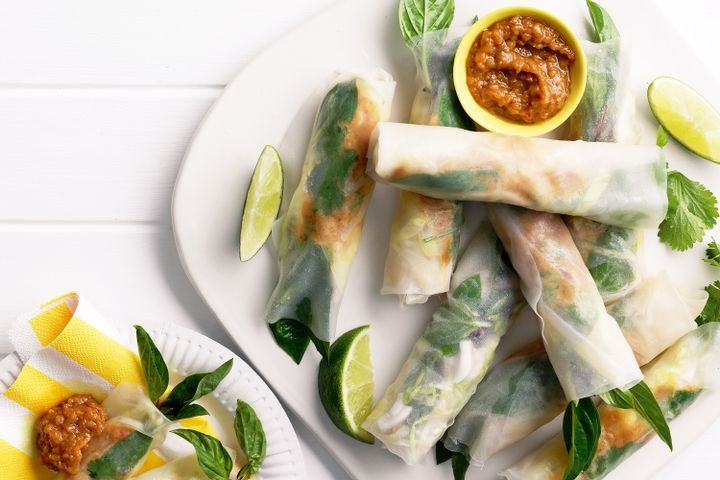

Vietnamese Cold Rolls

Desccription
Vietnamese best traditional dish made with rice paper. It's also known by many names such as summer rolls, rice paper rolls or goi cuon in Vietnamese.
Today we will be making my favourite and simple Vietnamese food.
Ingredients
- 1 drinking coconut
- 700g chicken breasts
- 1 stalk lemongrass, chopped
- 20 x 22cm rice paper wrappers
- 1/2 small iceberg lettuce, thinly shredded
- 1 cup Thai basil leaves
- 1/2 cup coriander leaves
- Lime wedges, to serve
Satay sauce
- 1 tbsp vegetable oil
- 1 eschalot, finely chopped
- 1 red bird's-eye chilli, seeded, finely chopped
- 1/2 tsp ground cumin
- 1 clove garlic, finely chopped
- 1/2 tsp coriander
- 1/2 tsp ground turmeric
- 250ml (1 cup) chicken stock
- 80ml (1/3 cup) coconut milk
- 2 tbsp hoisin sauce
- 1 1/2 tbsp fish sauce
- 140g (1 cup) roasted unsalted peanuts
- 1 tbsp grated palm sugar
- 1 lime, juiced
Instructions
- To cook chicken, place coconut on a work surface. Using the heel of a cleaver, make a 5cm hole in top. Pour coconut water into a small frying pan. Crack coconut open. Scoop out flesh, finely chop, then reserve. Add chicken and lemongrass to pan with enough tap water to just cover. Bring to a simmer over high heat, reduce heat to low, then cook for 10 minutes. Remove from heat. Set aside for 10 minutes (the residual heat of the water will finish cooking chicken).
- Meanwhile, to make sauce, heat oil in a small saucepan over medium heat. Add eschalot, garlic and chilli, and cook, stirring, for 3 minutes or until soft. Add spices and stir for 1 minute or until fragrant. Stir in stock, coconut milk and hoisin and fish sauces, then bring to a simmer. Reduce heat to low and cook for 10 minutes or until slightly reduced.
- Process peanuts and palm sugar in a food processor until finely ground. Add to coconut milk mixture. Simmer, stirring occasionally, for a further 5 minutes or until sauce is thick. Stir in lime juice. Cool. Makes 1 1/4 cups.
- Remove chicken from cooking liquid and cool. Finely shred chicken into a bowl. Add reserved coconut flesh.
- Fill a large bowl with warm water. Dip a rice paper wrapper in water for 20 seconds or until just softened, then place on a sheet of baking paper. Fold left side in by 5cm, then place some lettuce lengthwise on wrapper, 3cm up from the bottom. Top with a little chicken mixture and sauce, then a basil and coriander leaf. Fold bottom of wrapper up over filling, then roll up tightly, folding in right side as you go, to form a roll with one open end. Repeat with remaining wrappers and filling ingredients. Tuck a few extra herbs into the top of each roll.
- Serve rolls with lime wedges and remaining satay sauce.
More Recipes